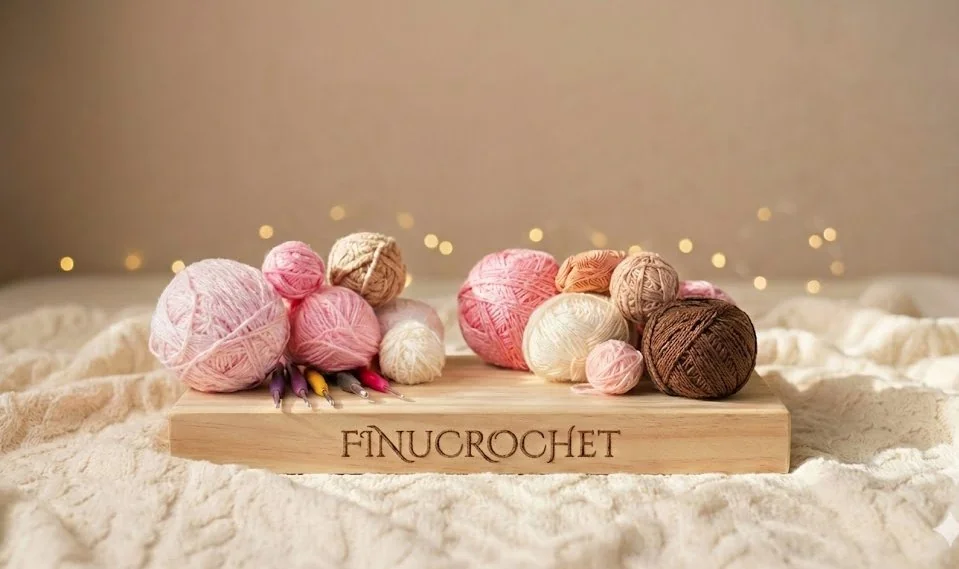
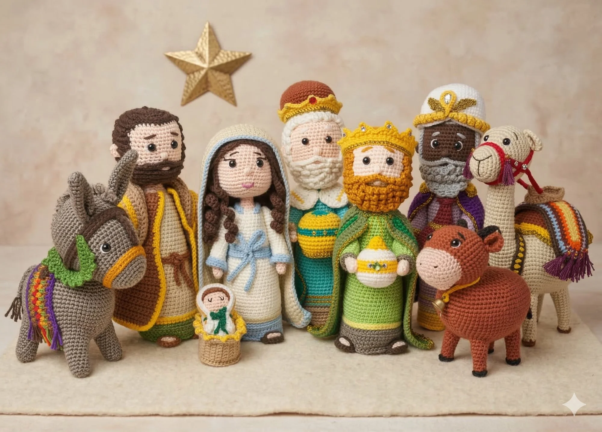
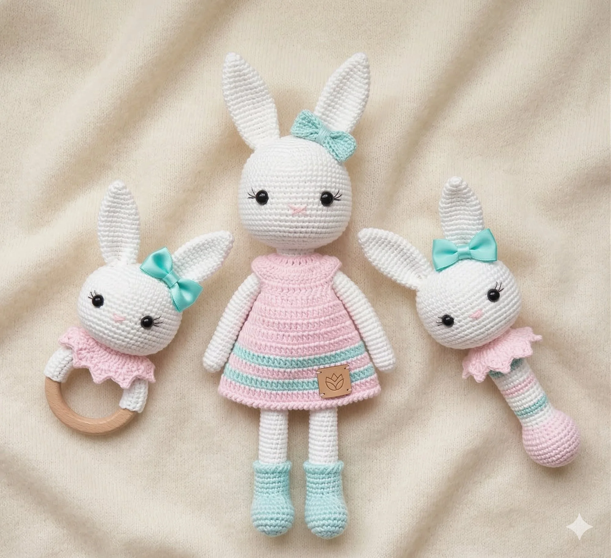
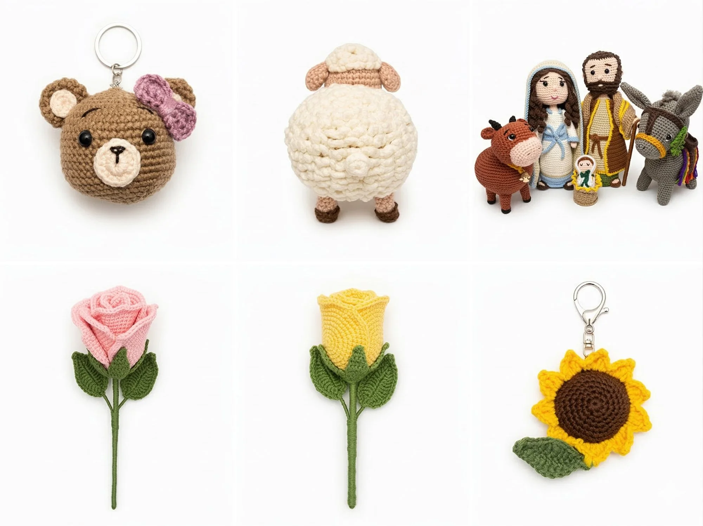
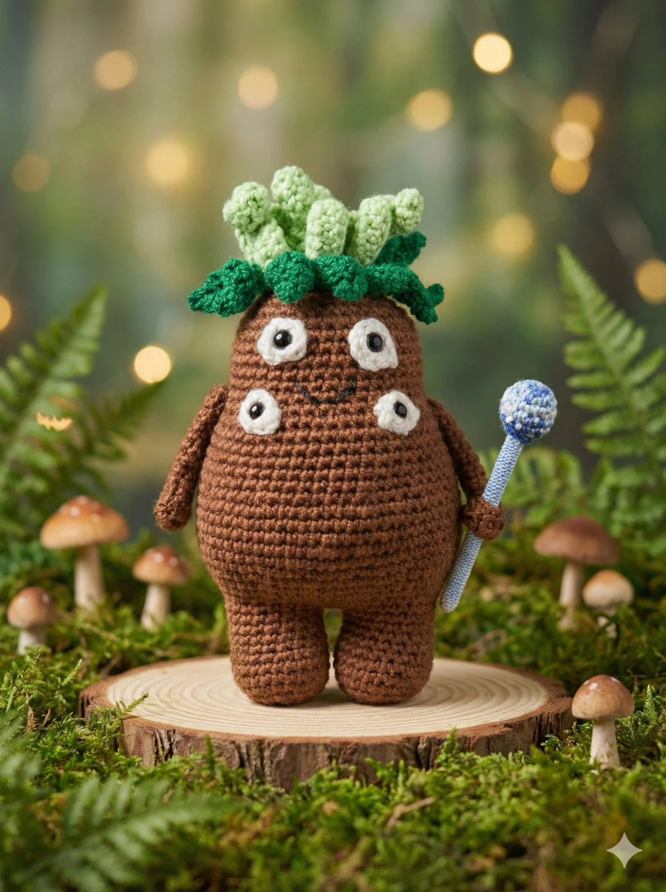
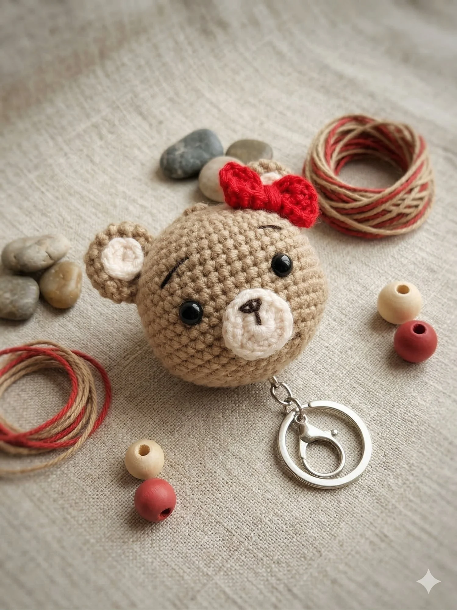
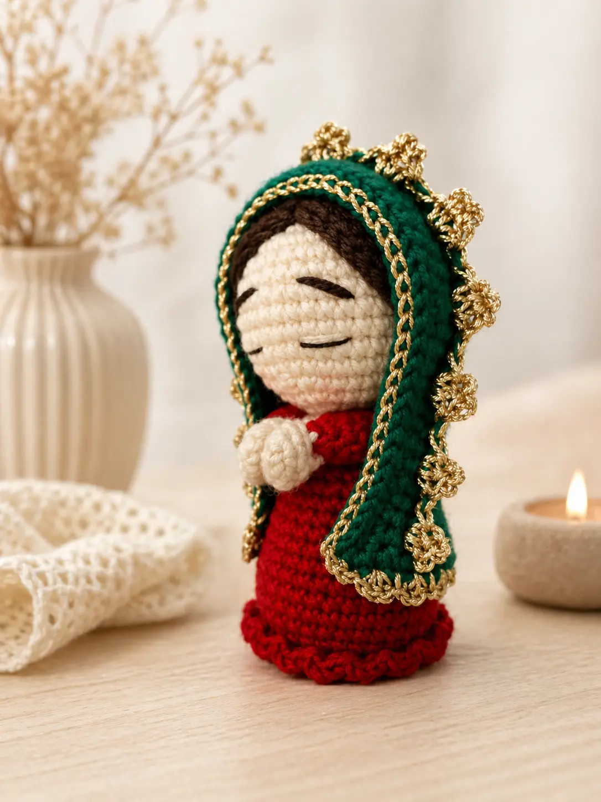
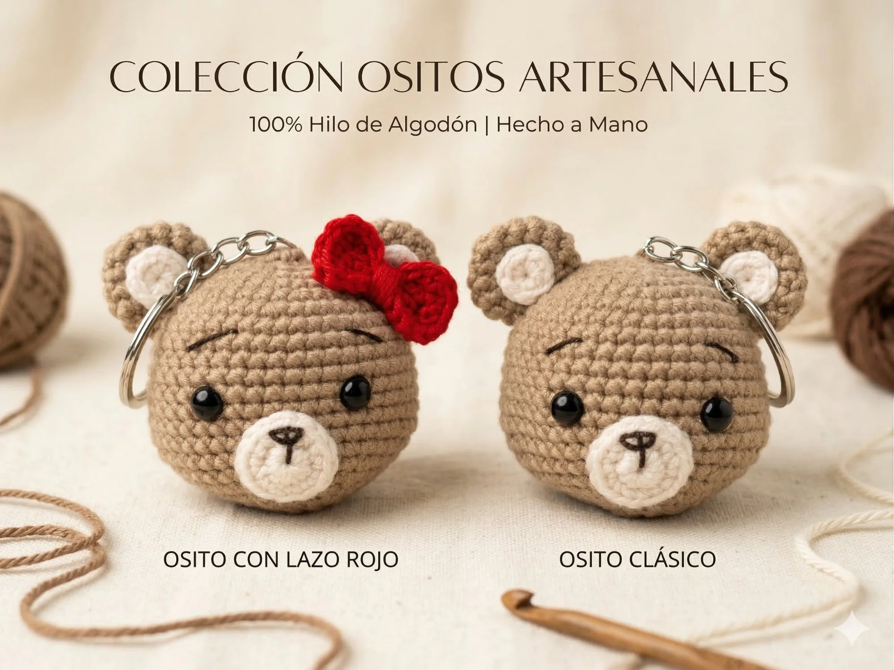
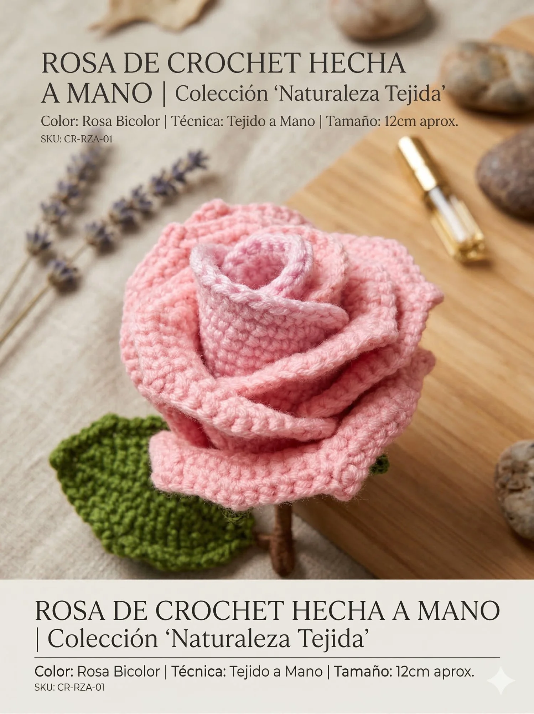

Pieza única tejida a mano. Hilo 100% algodón premium. Tiempo de elaboración estimado: 5–10 días.
Consultar por WhatsApp



Amigurumis artesanales — Medellín, Colombia
Piezas únicas tejidas a crochet con hilo 100% algodón premium. Cada amigurumi es una obra de arte que transmite ternura y calidez.


"Cada puntada lleva consigo un pedacito de alma."
En Finucrochet, cada amigurumi es una obra de arte tejida con pasión y dedicación. Utilizamos materiales de la más alta calidad para crear piezas únicas que transmiten calidez y amor.
Nuestros diseños combinan la tradición del crochet con la creatividad contemporánea, creando personajes llenos de personalidad que se convierten en compañeros inseparables.
Cada amigurumi nace de una historia: la elección del hilo, los colores que conversan, las horas tejiendo despacio. Detrás de cada pieza hay un proceso íntimo que pocos llegan a ver.
Cuéntanos tu idea


Creamos el patrón original con medidas precisas y seleccionamos la paleta de colores ideal.
Escogemos hilos de algodón premium y materiales seguros de la más alta calidad.
Cada pieza es tejida completamente a mano, puntada a puntada, con dedicación artesanal.
Empacamos con cariño y entregamos tu amigurumi listo para llenar tu vida de ternura.
Cada pieza es única y el precio depende del tamaño, la complejidad del diseño y los materiales que se usen. Escríbenos por WhatsApp con la idea o referencia y te enviamos una cotización personalizada en menos de 24 horas.
Depende de la pieza: amigurumis pequeños (llaveros, flores) entre 3 y 7 días hábiles. Piezas medianas (animales, personajes) entre 7 y 15 días. Pesebres completos o piezas grandes hasta 30 días. Te confirmamos la fecha exacta al cotizar.
Escríbenos por WhatsApp al +57 305 815 7511 con: la pieza que quieres, foto o referencia, tamaño aproximado y colores preferidos. Te respondemos con precio y tiempo de entrega.
Sí, enviamos a toda Colombia por Servientrega o Coordinadora. El costo del envío se cotiza por separado según la ciudad de destino y el tamaño de la pieza.
¡Sí, esa es nuestra esencia! Tejemos por encargo cualquier diseño: tu mascota, un personaje favorito, un pesebre con tus seres queridos, regalos de graduación o de cumpleaños. Cuéntanos tu idea y la convertimos en amigurumi.
Hilo 100% algodón premium hipoalergénico, relleno antifloride siliconado y ojos de seguridad. Todos los materiales son seguros para niños y mascotas, y los amigurumis se pueden lavar a mano con jabón neutro.
"El pesebre navideño es una obra de arte. Cada detalle está cuidadosamente elaborado. Mi familia quedó encantada."
"Regalé el ángel guardián y fue el regalo más especial que he dado. La calidad es increíble y el acabado perfecto."
"Los llaveros son hermosos y súper resistentes. Ya he comprado varios para regalar. ¡Son adictivos!"
Cuéntanos qué tienes en mente y te escribimos por WhatsApp para crear la pieza perfecta para ti. Cada diseño es único e irrepetible.